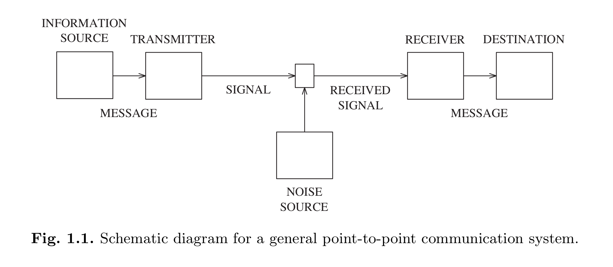
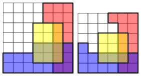
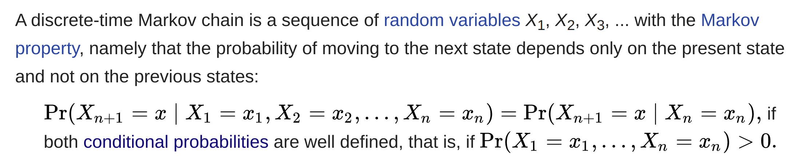
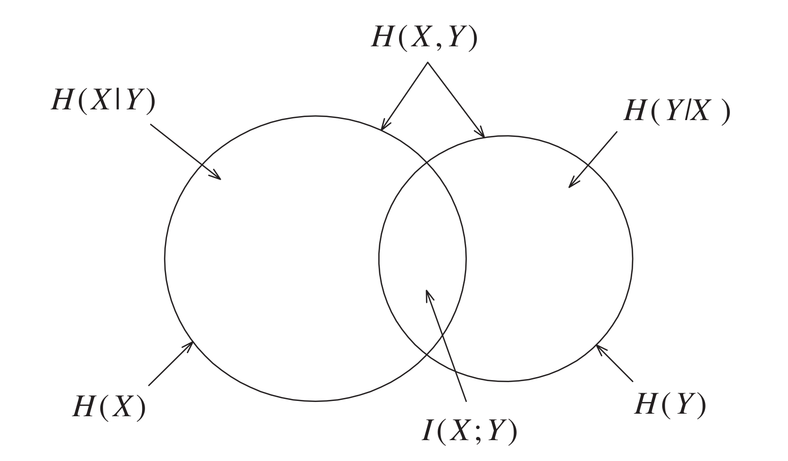

These are my lecture notes on Prof. Raymond W. Yeung's course on information theory. The course is based on Prog. Yeung's book "Information Theory and
Network Coding" and these notes are organized around that.
Information theory is a major research field in communication theory and applied probability. This is not meant as a comprehensive guide but rather a loose collection of definitions and short summaries.

Two key concepts:
- Information is uncertainty: modeled as random variables
- information is transmitted digitally: transmission is based on ones and zeros with no reference to what they represent
Shannon's Seminal Paper (1948)
- The source coding theorem defines entropy as the fundamental measure of information and establishes a fundamental limit for data compression (there always exists a minimal compressed-file size, no matter how smart the compression). This is the theoretical basis for lossless data compression.
- The channel coding theorem establishes a fundamental rate limit for reliable communication through a noisy channel. There always exists a maximum rate, called the channel capacity (which is generally strictly positive), of how much data can be reliably transmitted through a a channel.
- \(X\) is a discrete random variable taking values in \(\mathcal{X}\)
- \({p_X(x)}\) is the probability distribution for \(X\)
- \(\mathcal{S}_X=\{x\in\mathcal{X}:{p_X(x)>0}\}\) is the support of X (set of all outcomes \(x\) such that the probability is non-zero)
- is \(\mathcal{S}_X=\mathcal{X}\), \(p\) is called strictly positive
2.1 Independence and Markov Chain
Definition 2.1 Random Variables \(X\) and \(Y\) are called independent, denoted by \(X\perp Y\) if:
$$
\forall (x,y) \in \mathcal{X\times Y}\colon\, p(x, y)=p(x)p(y)
$$
Definition 2.2 (Mutual Independence) For \(n\ge3\), random variables \(X_1, X_2,...X_n\) are mutually independent if:
$$
\forall (x_1, x_2,...,x_n)\colon\, p(x_1, x_2,...,x_n)=p(x_1)p(x_2)\cdots p(x_n)
$$
Definition 2.3 (Pairwise Independence) For \(n\ge3\), random variables \(X_1, X_2,...X_n\) are pairwise independent if all \(X_i\) and \(X_j\) are independent.
Mutual independence \(\implies\) pairwise independence
Definition 2.4 (Conditional Independence) For random variables \(X\), \(Y\) and \(Z\), \(X\) is independent of \(Z\) conditioning on \(Y\), denoted by \((X\perp Z)\mid Y\)
$$
p(x, y, z) = \Bigg\{
\begin{array}{lr}
\frac{p(x,y)p(y,z)}{p(y)}\,(\ast), & \text{if } p(y)>0\\
0, & \text{otherwise}
\end{array}
$$
if \(p(y)>0\) then
$$
p(x,y,z)=(\ast)\,\frac{p(x,y)p(y,z)}{p(y)}=p(x,y)p(z|y)
$$
 "In other words, \(A\) and \(B\) are conditionally independent given \(C\) if and only if, given knowledge that \(C\) occurs, knowledge of whether \(A\) occurs provides no information on the likelihood of \(B\) occurring, and knowledge of whether \(B\) occurs provides no information on the likelihood of \(A\) occurring." [1]In the picture on the right \(R\) and \(B\) are conditionally independent given \(Y\) but not given \(\overline Y\)
Proposition 2.5 For random variables \(X\), \(Y\) and \(Z\)
$$
\forall (x, y, z),\, p(y)>0\colon\, [(X\perp Z)\mid Y \iff p(x,y,z) = a(x,y)b(y,z)]
$$
Meaning \(p(x,y,z)\) can be factorized as the given term, where \(a\) is a function that depends only on \(x, y\) and b is a function that depends only on \(y, z\).
Definition 2.6 (Markov Chain) For random variables \(X_1, X_2,\ldots,X_n\) where \(n\ge 3\), \(X_1→X_2→\cdots→X_n\) forms a Markov chain if
$$
p(x_1, x_2,\ldots,x_n) = \\\Bigg\{\begin{array}{lr}
p(x_1, x_2)p(x_3|x_2)\cdots p(x_n|x_{n-1}) & \text{if } p(x_2), p(x_3),\ldots,p(x_{n-1})>0\\
0, & \text{otherwise}
\end{array}
$$
Further explanation by Wikipedia:
Remark \(X_1→X_2→X_3\) is equivalent to \((X_1\perp X_3)\mid X_2\)
Proposition 2.7 \(X_1→X_2→\cdots→X_n\) forms a Markov chain if and only if \(X_n→X_{n-1}→\cdots X_1\) forms a Markov chain
Proposition 2.8 \(X_1→X_2→\cdots→X_n\) forms a Markov chain if and only if
$$
X_1→X_2→X_3\\
(X_1,X_2)→X_3→X_4
\\\vdots\\
(X_1, X_2, \ldots, X_{n-2})→X_{n-1}→X_n
$$
form Markov chains.
Proposition 2.9 \(X_1→X_2→\cdots→X_n\) forms a Markov chain if and only if
$$
p(x_1, x_2,\ldots,x_n) =f_1(x_1, x_2)f_2(x_2,x_3)\cdots f_{n-1}(x_{n-1},x_2)
$$
This is a generalization of Proposition 2.5
Proposition 2.10 (Markov subchains) Let \(\mathcal{N}_n=\{1,2,\ldots n\}\) and let \(X_1→X_2→\cdots→X_n\) form a Markov chain. For any subset \(\alpha\) of \(\mathcal{N}_n\) denote \((X_i, i \in \alpha)\) (a collection of random Variables) by \(X_\alpha\). Then for any disjoint subsets \(\alpha_1, \alpha_2, \ldots \alpha_m\) of \(\mathcal{N}_n\) such that
$$
k_1
Shannon introduced these basic measures of information:
- Entropy \(H(X) = -\sum_xp(x)\log_\alpha p(x) = -E[\log p(X)]\)
Measures the uncertainty of a discrete random variable. The unit for entropy is bit if \(\alpha=2\), nat if \(\alpha=e\) and D-it if \(\alpha = D\). (A bit in information theory is different from a bit in computer science)
- Joint Entropy \(H(X, Y) = -\sum_{x, y} p(x, y) \log p(x,y) = -E[\log p(X,Y)]\)
Measures the uncertainty of two joint discrete random variables.
- Conditional Entropy \(H(Y|X) = -\sum_{x, y} p(x, y) \log p(y|x) = -E[\log p(Y|X)]\)
Measures the uncertainty of a discrete random variable Y, given X.
- Mutual Information \(I(X; Y) = \sum_{x, y} p(x, y)\log \frac{p(x,y)}{p(x)p(y)}=E[\log \frac{p(X,Y)}{p(X)p(Y)}]\)
"Quantifies the "amount of information" [..] obtained about one random variable through observing the other random variable."[2]
- Conditional Mutual Information \(I(X; Y|Z) = \sum_{x,y,z} \log \frac{p(x, y|z)}{p(x|z)p(y|z)} = E[\log \frac{p(X, Y|Z)}{p(X|Z)p(Y|Z)}]\)
The mutual information of X and Y, given Z.

The following equalities hold:
- \(H(X, Y) = H(Y, X)\) and \(I(X; Y) = I(Y; X)\) and \(I(X; Y | Z) = I(Y; X | Z)\)(symmetry)
- \(H(X, Y) = H(X) + H(Y|X)\) (revealing X and Y at the same time or one after another yields the same amount of information)
- \(I(X; X) = H(X)\)
- \(I(X; Y) = H(X) - H(X|Y)\)
- \(I(X; Y) = H(X) + H(Y) - H(X, Y)\) (→ inclusion-exclusion)
- \(I(X; X|Z) = H(X|Z)\)
All of the information measures described above are continuous for fixed finite alphabets with respect to convergence in variational distance (\(\mathcal{L}_1\) distance):
$$
V(p, q) = \sum_{x\in\mathcal{X}} |p(x) - q(x)|
$$